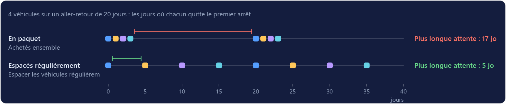

Lignes
Des véhicules qui partagent leurs arrêts, additionnent leurs gains et gardent leurs distances.
Une ligne est un itinéraire que tes véhicules partagent. Ses arrêts appartiennent à la ligne : tu les changes une fois et tous ses véhicules suivent.
Créer une ligne
- Ouvre un véhicule et clique sur Créer une ligne sous ses ordres. Tous les véhicules qui desservent les mêmes arrêts la rejoignent, où qu'ils en soient de leur tournée.
- Mets-y un autre véhicule avec Rejoindre une ligne dans la fenêtre de ce véhicule. Il prend les arrêts de la ligne.
- Quitter la ligne retire un véhicule : il garde les arrêts pour lui.
- Cloner sur un véhicule d'une ligne en achète un de plus pour la même ligne.
- Les arrêts changés dans la fenêtre de n'importe quel véhicule changent toute la ligne, de même qu'une case Chargement complet ou Transfert.
La fenêtre de la ligne
Clique sur le nom de la ligne dans la fenêtre d'un véhicule, ou ouvre Lignes dans la barre du haut (Ctrl+L). Donne à la ligne un nom et une couleur bien à elle : son itinéraire est tracé sur la carte dans cette couleur.
| Bouton | À quoi ça sert |
|---|---|
| Ajouter un véhicule | En achète un de plus, comme le véhicule le plus récent de la ligne. |
| Tout arrêter | Arrête tous les véhicules à leur prochaine station ; clique de nouveau pour les redémarrer. |
| Renouveler les vieux | Renouvelle tous les véhicules qui ont dépassé leur durée de service. |
| Changer de modèle | Remplace tous les véhicules de la ligne par un autre modèle. |
| Clique deux fois. Les véhicules continuent de desservir les mêmes arrêts, chacun de son côté. |
La fenêtre additionne aussi ce que rapporte la ligne : ses véhicules, leur bénéfice cette année et l'an dernier, leur taux de remplissage au départ et leur coût d'exploitation. Compare tes lignes pour voir quels itinéraires rapportent.
Espacement régulier
Les véhicules achetés ensemble, ou retenus par un chargement complet, ont tendance à se suivre en paquet et à arriver l'un après l'autre. Coche Espacer les véhicules régulièrement dans la fenêtre de la ligne :


- La ligne chronomètre un aller-retour puis le partage : avec 4 véhicules sur une tournée de 20 jours, un véhicule quitte le premier arrêt tous les 5 jours.
- Un véhicule qui arrive trop tôt au premier arrêt y attend, et continue de charger pendant ce temps.
- Il n'attend jamais plus d'un intervalle : un véhicule lent ne peut pas bloquer les autres.